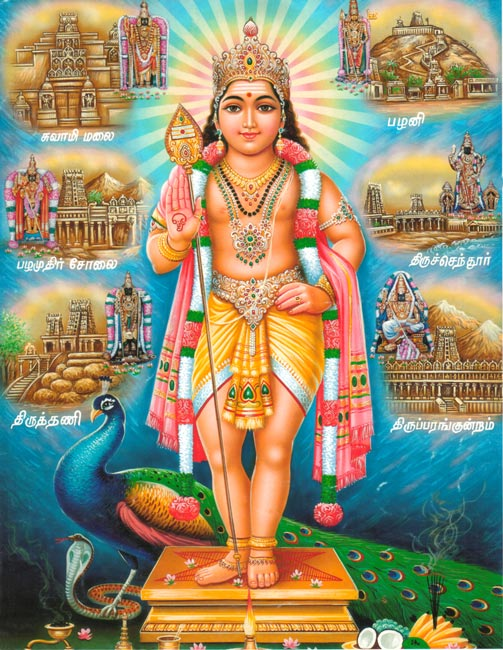

History Of Murugan Temple
Murugan, also known as Kartikeya. Muruga is the main god of worship in Tamil Nadu, South India, Sri Lanka, Mauritius and many other places where Tamilans live. He is a god with six faces. The god Murugan has six shrines in Tamil Nadu, which are known as Arupadaiveedu. In Tamil Nadu, Murugan has continued to be popular with all classes of society right since the Sangam age. This has led to more elaborate accounts of his mythology in the Tamil language, culminating in the Tamil Kandha Purānam, written by Kacchiappa Sivachariyar (1350-1420 AD) of Kumara Kottam in the city of Kanchipuram. He was a scholar in Tamil literature, and a votary of the Shaiva Siddhanta philosophy. the second of shiva he is also a the hero of some certain places. Murugan is the son of Shiva and Parvathi, who has take birth to kill the asuras. The six sites at which Murugan sojourned while leading his armies against are Palani, Swamimalai, Thiruparamkundram, Pazhamudirsolai, Thiruthani and Thiruchendur which all are in Tamil Nadu.
The Arupadai Veedu Temples of Lord Murugan are:
- Thiruparankundram
- Swamimalai
- Thiruthani
- Planimalai
- pazhamudhircholai
- Thiruchandur
1.Thiruparankundram
Tirupuramkundram is one of the six main pilgrimage sites for the devotion of the son of Shiva - Muruga(also Subramanya),Tamil Hindu god of war and patron of Tamil Nadu.According to legend, the Lord married Deivyani, the daughter of Lord Indra at this place.The Tirupuramkundram Temple, Madurai dates back to the sixth century.The antiquity of Tirupuramkundram Temple can very well be gauged from the fact that it finds mention even in the Sangam Literature. According to another tale King Harichandra worshipped Shiva from this hillock and gained eternal wisdom. Thus he built a temple here - temple was complete with Praharams (ambulatories), walls, Gopurams (gate towers) and steps. The "real history" (who can differentiate myths and reality in Indian past?) of the temple may start with 8th century AD when Pandya rulers built rock-cut temple. Later, during the reign of Nayaks of Madurai (1559 - 1736 AD) the temple was supplemented with beautiful gopurams and beautified. There was built extensive and beautiful front part (mugha mandapam) with 48 ornate pillars carved during the rule of Pandya and Nayaks.

2.Swamimalai
The Swamimalai Murugan Temple, also known as Swaminathaswamy Temple is situated in Swamimalai in Thanjavur district of Tamilnadu, which is dedicated to Lord Murugan and also one of the ‘Arupadai Veedu Temples’. It is said that, Swamimalai Murugan Temple was in existence from 2nd century BC, built by the King Parantaka Chola I. The mythology says that when Lord Brahma, the Lord of all creations, at the time of visiting Mount Kailash He disrespected Lord Murugan. The ever playful child Lord Murugan in angry asked Lord Brahma for the meaning of Pranav Mantra “OMâ€. Lord Brahma was unable to reply and admitted his ignorance towards Lord Murugan. And hence Lord Murugan knocked Lord Brahma on His forehead and imprisoned Him. All the creations came to a standstill, since Lord Brahma was imprisoned. And the Devas prayed Lord Shiva to get Lord Brahma released. When Lord Shiva asked Lord Murugan to release Lord Brahma from imprisonment, Lord Murugan demanded that the punishment was for His ignorance and unawareness of knowing the meaning of the Pranav Mantra “OMâ€. A sculpture in this temple denotes that Lord Murugan taught Lord Shiva about the meaning of Pranav Mantra OM

3.Thiruththani
Thiruthani Murugan Temple also known as Sri Subrahmanya Swami Kovil is located on the hill of Thiruthani in Tamilnadu, dedicated to Lord Murugan and also one of the ‘Arupadai Veedu Temples’. As this Thiruthani Murugan Temple is located on the hill about 700 feet above the sea level, devotees have to climb 365 steps to reach the temple, which indicates 365 days of the year. Famous religious places surrounds this temple such as Kancheepuram on the south, Sholingar and Vallimalai on the West, Tirupati and Kalahasti on the North, Tiruvalangadu on the East. The presiding deity of this Thiruthani Murugan Temple is Lord Subramanya Swamy(Lord Murugan), and the sanctum of Lord Murugan is made of 1 lakh Rudrakshas. The other important deities of this temple are Lord Shanmughar, Goddess Valli, and Goddess Deivayani. The mythology says that the Lord Murugan rested at Thiruthani hill to reduce His anger after destroying the demon King Surapadma in Thiruchendur and hence the place is known as ‘Thanigai malai’. Thiruthani Murugan Temple is also called by the names Purnagiri, Kshanikachalam, Mooladri, Neelotpala, Shantipuri (abode of peace).

4.Palanimalai
Palani Murugan Temple, also named as ‘Arulmigu Dhandayuthapani Swamy Temple’ is dedicated to Lord Murugan, younger son of Lord Shiva and also known as ‘God of Tamil Language’. Here, He is named as ‘Lord Dhandayuthapani’. Palani Murugan Temple is one of the six abodes of Lord Murugan which are grouped as ‘Arupadai Veedu Temples’ and also a most important pilgrimage spot for devotees of Lord Murugan. This Temple is situated in the town of Palani in Dindugal district of Tamilnadu. This temple was constructed by the king Cheraman Peruman in the 9th century. In Tamil literature the name Palani has been mentioned as ‘Podhini’, which later came to be called by the name Palani. This place is also called as Vaiyapuri Nadu, as this place was ruled by the King Vaiyapuri Kopperumbaegan earlier. The mythology is that Lord Maharishi Naradar visited Lord Shiva in Kailash and presented a fruit which is called ‘Gnaana Pazham’ (a divine fruit). Lord Shiva decided to conduct a competition stating that the fruit will be gifted to whichever of His two Sons circles the world and reaches first.
5.Pazhamudhircholai
Pazhamudhircholai Murugan Temple,also named as ‘Solaimalai Murugan Temple’ is located near the city Madurai of Tamilnadu, dedicated to Lord Murugan and also one of the ‘Arupadai Veedu Temples’. Pazhamudhircholai temple is situated atop a hill with dense forest about 19 kilometers from the Temple City Madurai. This hill is also known as Vrishabhadri or Idabagiri. Azhagar Kovil, one among the 108 Divya Desam temples is located very close to the Pazhamudhircholai Murugan Temple. This is the only temple among the six abodes of Lord Murugan, where He blesses His devotees with His consorts Goddess Valli and Goddess Deivayani. There is an idol of Goddess Rakkayi Amman, who is considered as the Guardian deity.

6.Thiruchandhur
The famous Thiruchendur Murugan Temple,dedicated to ‘Lord Murugan’ is located in Thoothukudi (Tuticorin) District of Tamilnadu and also one of the Arupadai Veedu Temples. The word Thiruchendur denotes sacred and prosperous town of Victory. Thiruchendur temple is trusted to be a sign of Lord Murugan’s victory over the demon king Surapadman. A legend reveals that,after ‘Surasamharam'(Killing of Surapadman) Lord Murugan wished to worship His Father Lord Shiva here. So,the divine architecht named as Mayan constructed the shrines here. Even now Lord Murugan is seen in the posture of worshiping Lord Shiva in the Sanctum Sanctorum of Thiruchendur Murugan Temple Raja Gopuram of most of the temples in Tamilnadu has been placed in the Eastern direction.But here only it is placed in the western side and also named as Mela Gopuram. This Gopuram was constructed 300 years ago.

Share This Website